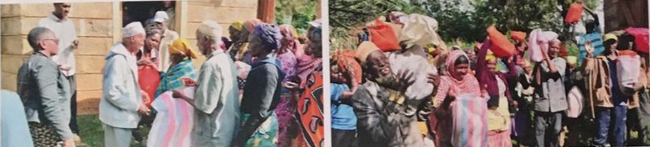

About Us
At Sirikoi Lodge, we are dedicated to enriching the lives of our community while upholding sustainability. Our various initiatives aim to create positive change and support local traditions.

Feeding Programs for Elderly and Disabled Community Members
"By organizing feeding initiatives tailored to the needs of the disabled and elderly, we provide access to wholesome meals within our community. This not only fosters overall health and wellness but also enhances their quality of life through practical aid, fostering social interactions, and cultivating a sense of inclusion and support."
Meaning of Bead Colours
Beads vary in material (bone, glass, horn, seeds, shells, stones and fossilized materials), their significance, colour, size, and placement on the body or clothing. All these denote and evoke different meanings in different tribes. In most tribes, beads embody beauty, tradition, culture, strength, marital status, age, power, and warrior-hood.
Each colour bead represents a specific and significant aspect of their culture; however, these may vary from tribe to tribe.
Waste Management - Reduce, Reuse, Recycle
Our dedication to environmental responsibility is evident in our waste management and ethical sourcing strategies. By selecting suppliers who share our values, we build a supply chain that reduces environmental harm and supports local communities. Recycling is central to our waste management strategy, with 85% of our waste being recycled, demonstrating our commitment to preserving the environment and reducing our ecological footprint.
Energy and Water Management: Sustainable Living Starts With Us All!
We run the lodge on 100% solar energy. To help conserve, we turn off lights and appliances when not in use, maximize natural lighting, and consider energy-efficient alternatives.
Every droplet matters! Conserve water by securely closing taps, promptly reporting leaks, and opting for shorter showers to reduce water wastage.
The Story of the Beads
The Maasai, Samburu, Turkana, and Rendille pastoral tribes are highly associated with beadwork in Kenya. They are known for their elaborate beaded jewelry, red-painted chins with ochre, headdresses, stacked bracelets, and heavy brass earrings.
The women in these tribes wear these pieces as a sign of wealth, marital status, health, and to denote the number of children they have. For instance, if a woman's first child is a boy, she wears many earrings. This also applies to women with several male children. Similarly, traditional wedding collars have several beaded strands hanging from them, which represent the amount of dowry paid for that bride, typically in the form of cattle.
Women wear these pieces as a sign of beauty and wealth, while men wear beaded pieces and different symbols on their bodies to mark their achievements. For instance, young Maasai warriors wear an arm band, known as the "errap," made of leather and metal wire coils, indicating that he has fought and killed another man.
To girls, a crimson collar of beads is given by their father to signify that a husband has already been chosen for her, but she is not yet engaged. Once engaged, the crimson collar is traded for brass earrings, marking the transition to marriage.
Job Creation
We enable our community through meaningful employment opportunities, fostering growth, inclusivity, and diversity, with 74% of our staff being local residents. We take pride in cultivating an environment where everyone feels valued, supported, and empowered to thrive. This is achieved through the implementation of policies and practices that prioritize fairness, equity, empowerment, and personal growth within the workplace.
Elevate Program
Sirikoi's Elevate Program empowers local youth by enhancing their career prospects and personal development. Unlike traditional internships, it provides hands-on experience, mentorship, and exposure to real-work environments. Practical learning experiences help participants grasp theoretical concepts within actual job settings, equipping them with the skills needed to navigate workplace dynamics and daily tasks effectively.
We actively support the local youth football club, providing resources and facilities for young athletes to excel. Through the values of teamwork, discipline, and leadership, the club fosters personal growth and positive social development among its members.
Education Support
We are dedicated to shaping a brighter future through education. We invest in the next generation by equipping them with the tools necessary for success through the provision of scholarships, bursaries, and infrastructure development. Dozens of bursaries have been awarded to deserving students within our community.
Vocational Training
We support Pepo la Tumaini Jangwani, which specializes in vocational training for street-connected vulnerable youths by providing them basic education and using a holistic approach to empower these children heading households.
Organic Farming Practices
Through regenerative agriculture, we prioritize soil health and promote practices like cover cropping, crop rotation, companion planting, natural pest control, and minimal tillage for the best year-round yields. This shift towards ecologically sound farming methods has encouraged biodiversity and benefits the surrounding ecosystem as well.
We have initiated shared learning experiences through on-site workshops, hands-on learning, and school garden conversions, creating a space for intergenerational skills to be passed down.
Emergency Relief Assistance
During times of adversity, Sirikoi stands united with our community, extending emergency aid and assistance to those facing hardship. Whether it involves distributing food, repairing roads/bridges, or providing essential resources, we are committed to offering a supportive hand in times of need.
Feedback
Contact Us
Email: info@sirikoi-lodge.co.ke
Phone: +254 700 000 000
Blog
Check back soon for articles on sustainability practices and updates from Sirikoi Lodge!